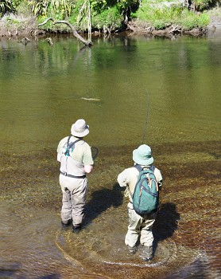
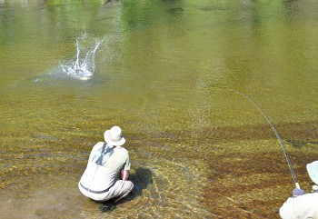
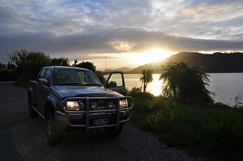

釣行日誌 ＮＺ編 「翡翠、黄金、そして銀塊」
ひとつの闘いの終わり
2010/11/24(WED)-4
ストライク！ フッキングした鱒はいきなり下流へと突っ走り、倒木の間に逃げ込もうと必死で抵抗する。ドラグが鳴る。突然、ロッドにかかる重量が失われ、ラインが力無く垂れ下がった。
「あ～っ！ バレたぁ！」
またしても、である。フライを咥える鱒の姿に気を取られて、ラインのストリッピングをして弛みを取るのを忘れていたのである。それがもとでフッキングが甘くなってしまった。昨日はできていたのに今日はできなかった。反省。うーん、シケーダで１尾釣ることはできなかったか.....
気を取り直して遡行を始める。河畔林の中をうねうねと歩きやすいポイントを捜しながら上流へ向かう。さすがに15分も歩くと汗が出てきて額を伝って落ちる。ディーンは相変わらず力強い歩みで僕たちをリードしてゆく。そうそう歩きやすいポイントばかりではなく、しばしば藪こぎを強いられる。ロッドを折らないように注意を払いながら、鰐部さんとディーンの歩みを追いかける。
時刻は午後４時を過ぎており、５時にはヘリのお迎えが来るのでそれまでにはピックアップポイントまで戻っていなくてはならない。次の魚が本日の最後となるかもしれなかった。
河畔林が水際まで生い茂っているポイントに来た。またまたディーンが１尾見つけ出し、先ほど失敗した僕がまたトライできることになった。鱒は深めに居着いているので今度は例のニンフ16番を結ぶ。あたりは砂地が一面に広がっている深瀬であり、障害物は無い。勝負だ。ディーンの指示した位置に立ち込み、鱒のいる方向を注視する。角度が浅いため、魚は見えない。ラインを出し過ぎないよう心がけ、ガイドの注文通りにキャストする。６投目ぐらいでディーンがＯＫとつぶやき、数秒後、ストライクの声。合わせ。今度はしっかり掛かったか？ 広い水面を縦横無尽に駆け回り、大物鱒がティペットの張力と闘う。鱒は下流へダッシュする。ロッドを上流側に倒して抵抗する。ジャンプ。水面が割れ、派手な水しぶきが上がる。空中に飛び上がった魚体は、本日一番の大きさである。再び疾走。そして潜行。数分のファイトが永遠のように長く感じられる。鱒はまだまだ力強い。バットに手を添えて、強引な魚の抵抗に備える。望遠レンズで写真を撮っていてくれる鰐部さんが、テンションを保つようにと声援してくれる。ありがたい。 はるか下流で反転していた鱒も、ようやく自分の近くに寄ってきて、水面近くに浮き出した。

ディーンがリュックを下ろし、ネットを手にして水の中に歩み込んでくる。水を割って背中を見せた鱒の、その背の盛り上がりを見ると、心の底がじんと熱くなるのを覚えた。さぁ、ディーンのネットまでもう少し。リールを巻き始めたとたん、また鱒がジャンプした。そして虚無が訪れた。

なんてこったい！また外れた。く～っとこらえて、戻ってきたディーンに握手を求めると、ディーンは怪訝そうな顔をした。よく闘った鱒を讃えての握手のつもりだったのだが...... 今の１尾は惜しかった。釣り上げなければいけない１尾だった。闘いが悔しい結末に終わり、疲労がどっと出てくる。しかし、本日の闘いはこれで終わり。三人は、下流を向いて、ピックアップポイントまでの帰途についた。しかし、期待に満ちて鱒を捜しながら上流へ歩むのと異なり、帰途はひたすら辛さがのしかかる。藪漕ぎまた藪漕ぎ。シダの原生林の中、切り株をまたぎ、枝を払いのけ、汗まみれになりながら歩き続ける。途中、ディーンが川岸を離れて原生林の中に入っていった。僕たちにはここで待っているようにとの注意を残して。数分後、戻ってきたディーンは、ここでショートカットをして、近道でヘリが降りられるポイントまで藪漕ぎするといった。川は大きく蛇行しているので、川岸に沿って歩くより、Ｕ字型をして流れる川の狭くなっている部分を直線で結んで歩いた方が早いのである。しかし、原生林のまっただ中は、本当に歩きにくく、汗だくになる。おまけに岸辺ではない、本当のジャングルに囲まれると、ディーンとカツからはぐれてしまったら、即迷うことになる。不安を抱えつつ、息を弾ませながら歩き続けると、10分ぐらいでショートカットが終わり、川岸に出た。そこから15分歩いてようやくヘリが迎えに来る場所に到着した。
ピックアップポイントは、原野の中にできた草原だったので、昨日のような土木作業はしなくても良かった。デイパックを下ろし、レインジャケットを脱いで寝転ぶ。上空は青く澄み渡り、白い雲が風に乗って流れて行く。ふと、これまでの人生、これからの人生のことを短く想った。
遠くからかすかにヘリの爆音が聞こえてきた。ジェームスさんだ。音のする方角を見ると、わずかに黒い点が見えて、それがどんどん大きくなってくる。ディーンが目印においたオレンジ色の工事用ベストを目標に今回も見事に着陸した。三人でヘリに乗り込み、機体が浮上する。二日目の闘いの舞台である原野の中の川がみるみるうちに小さくなり、15分足らずでジェームズさんの自宅に着いた。
エンジンが止まり、ローターの回転が緩やかになる。ディーンがヘリの荷物室から釣り竿とデイパックを取り出してくれ、車に戻ってウェーダーとウェーディングシューズを脱ぐ。靴を履いてジェームズさんに本日のヘリ代金をキャッシュで払う。親切な彼は、今日は飛行距離が短かったので、まけといてやろうと言って、ぼくらにおつりをくれた。
さぁ、またホキティカまで３時間のドライブだ。僕は後席に乗り込むと、どっと疲れが出てくる。ディーンが iPod をカーステレオにつないで音楽をかけてくれた。アルバムは、僕が今回の旅でディーンの結婚祝いとして贈った山下達郎の On the Street Corner 1-3 である。やることが早いディーンは、昨日のうちに、CDから iPod に音楽を取り込んでいたのである。心地よい調べの中で僕はすぐに眠りに落ちた。
帰途、再びフォックス氷河のピザ屋に寄り、昨日と同じスペシャルのハーフを頼んだ。今日はシェフが違うのか、昨日よりも美味しかった。今日は一日レインジャケットを着て釣っていたので、相当汗をかいた。Ｔシャツを着替えたくて、ディーンに、ここで下着を替えて良いかと聞くと、
「ゴウ、それはやめておけ。ここは警察署の前だ」
と、彼は笑って言った。しかし、パンツまで脱ぐ気はないからと説明し、デイパックの防水袋からＴシャツを取り出して着替え、さっぱりした気分で再び車に乗り込んだ。初夏の宵、車の少ないステートハイウェイ６号線を、ディーンのトヨタが疾駆する。ＢＧＭは達郎だし、言うこと無しのドライブである。途中、湖の横で小休止をしたのち、９時頃ホキティカに着き、今夜もインド料理店のテイクアウトでカレーを食べた。良い一日だった。Ｂ＆Ｂでシャワーを浴びると、綿に沁み込む水のようにベッドに吸い込まれた。

釣行日誌ＮＺ編 目次へ
サイトマップ
ホームへ
お問い合わせ